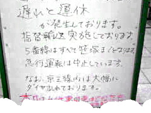

 image: Shinjo“電車が悪いんです”
九段下駅の改札口で、ざわつくスーツ姿の男たちの中、彼女のいらいらとした様子は抜きん出ていた。うねうねとした海洋生物のようなヒダの波打つブラウスに、短いスカート。走ることなどできそうもないハイヒールのミュール。ブランドもののバッグを持ち、もう一方の手には携帯電話。その電話を握る指の爪には、キラキラ光るブラスチックの小片が無数に貼り付けられていた。彼女の表情としぐさが、ふてくされた気分を、強く主張していた。
改札口にはホワイトボード[1]が置かれ、電車の運行が遅れたことの原因が掲示されていた。そして、改札口には、発行される遅延届けを求める人が群がっていた。彼女も、その中の一人だった。
遅延届け[2]。それは、何のためにあるのだろう、と思った。約束の時刻に、約束の場所へ行く。それは、そこに自分を必要としてくれる人がいるから、自分が役に立てる状況があるからだろう。もしくは、逆に、自分が必要としている誰かを待つためだろう。
遅れるということは、その約束を守れない、ということ。自分にかけられた期待を裏切ることであり、役に立てないことだ。理由が何であれ、そうした裏切りをしてしまったことに、違いはない。ならば、遅延届けに、何の意味があるのだろう。
自分のせいじゃないんです。電車が悪いんです。自分も交通網への信頼に裏切られたんです。被害者なんです。そんな、免罪符[3]のようなものなのかな。
その女は、遅延届けを無言で受け取ると、あせる様子もなく、地上へとつながる階段を上った。メールを打ちながら。
もちろん、仕事のメールなのかもしれないし、体調のせいで走れないのかもしれない、そうも考えられるが、でも、やはり、どうなんだろう、その態度は、と思った。人それぞれだということは十分にわかっているけれど、それでも、やはり、イラついた。すぐにイラつく自分にも、心が狭いなあ、とイラついた。
referenced works
- ホワイトボード：電車の運行上、何かトラブルがあったときに設置される立て看板。緊急のお知らせのため、手書きであり、生々しい。美しい文字を見かけることは、極めて少ない。 ↩
- 遅延届け：電車の運行に遅れが出たということを証明するための書類。会社や学校に提出するために用いられる。 ↩
- 免罪符：それを持っていれば、罪の償いから免除される。そんな都合のよい存在として、ローマカトリック教会が十五世紀末に発行した証書。 ↩
location information
- 場所: 千代田区九段北の都営新宿線九段下駅改札口
- 時間: 昼
- 緯度: 35.695591
- 経度: 139.751952
- 地図: Google Maps
016 “ポツンと東京を見下ろすその姿は気高く、とても真摯だ。”
015 “光に彩られて先輩の横顔が、綺麗に染まる.。”
014 “悲しくて歩けないという気持ちを初めて知った夜”
013 “私たちの声だけが静かに揺れた”
012 “細くぐるりと指を囲む、日焼けをしていない左手の薬指の根元”
011 “涙を流しながら煙を吐く彼の隣”
010 “幼い耳には雑音にしか聴こえない音楽に興味が湧いた”
009 “今年も蕎麦が食べられるなぁ”
008 “お堀に映った月をみんなで見てる”
007 “バッグの中だけがつめたいまま”
006 “ほぼ満員の客がざわざわと寿司を食らっている”
005 “向かい合って、仁王立ち”
004 “なんでもないたった6畳の白い部屋”
003 “昔の彼女がスーツを着てモデルをしてた”
002 “電車が悪いんです”
001 “どこで彼女とセックスをするのかは、東京の子供にとっては問題です”

Write for Us!
広い東京の中に、あなたの思い出を刻んでみませんか？ あの日、あの場所で体験した、あの出来事。あなたにとって忘れられない思い出を、短い物語にして送ってください。
commentary